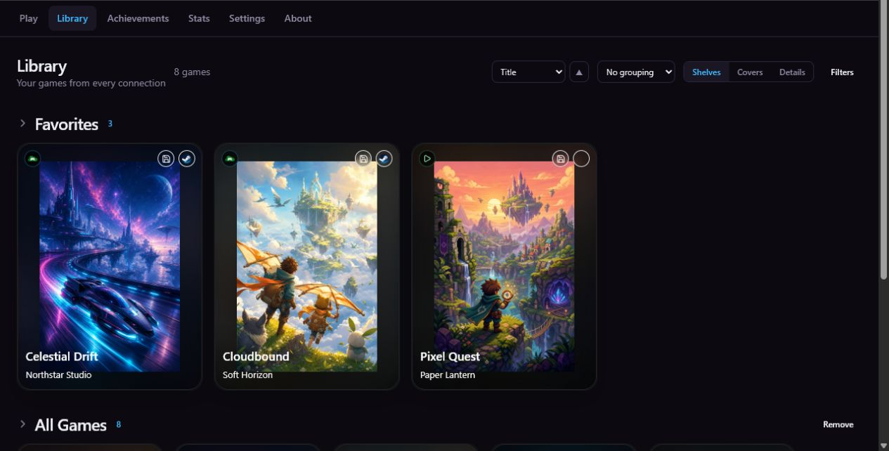
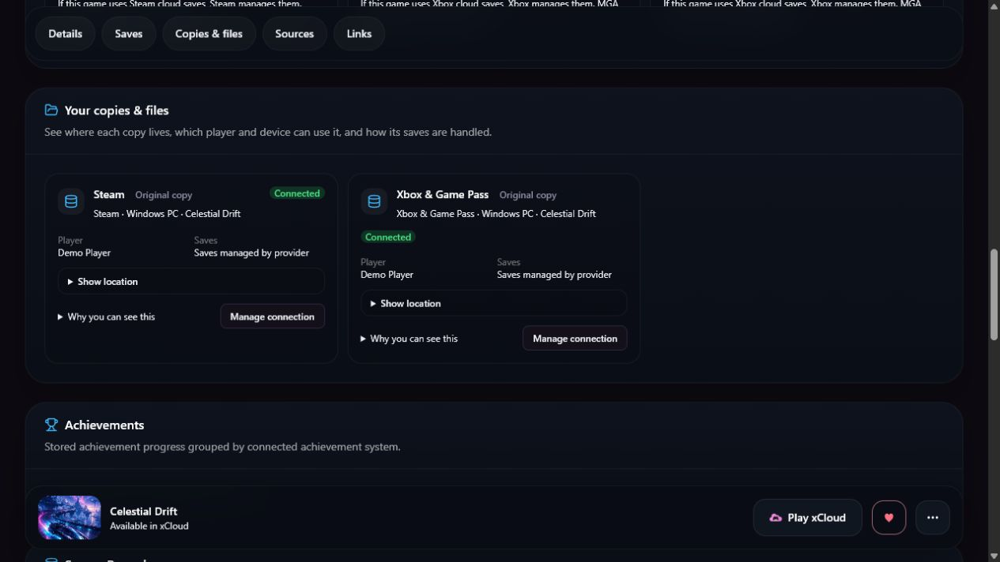

More than one store
Stop checking several launchers just to remember where you own a game or whether Game Pass includes it.
Your home game library
Bring Steam, Xbox and Game Pass, ROMs, installers, NAS folders, and browser play into one private home library.
Open it from any browser at home, choose the version and way to play, and send supported installs or launches to the Windows user and PC you choose.

One home library for a collection that grew beyond one store
This is for you if
MGA is built for Windows households with several accounts, gaming PCs, stores, subscriptions, ROMs, or installers on shared storage.
Stop checking several launchers just to remember where you own a game or whether Game Pass includes it.
Each player keeps their own accounts while MGA shows which gaming PC is ready for the next action.
Bring ROMs and supported installers from Google Drive or a NAS into the same library as your stores.

One game, every real option
See whether you have the Steam or Xbox version, which PC has it installed, and whether a configured browser, emulator, or xCloud option is available.
How MGA works
Phones, tablets, and TVs only need a browser. Install the small MGA Client for each Windows account that will install or launch games locally.
Holds the library, profiles, connections, artwork, and web interface.
Browses the library from another PC, TV, phone, or tablet at home.
Performs supported installs and launches for one Windows user and device.
Yours to run
MGA runs on a Windows PC in your home. The library does not require an MGA cloud account.
Windows · Pre-1.0 · Trusted home network
Check what works today, then install the Server on the Windows PC that will hold your library.